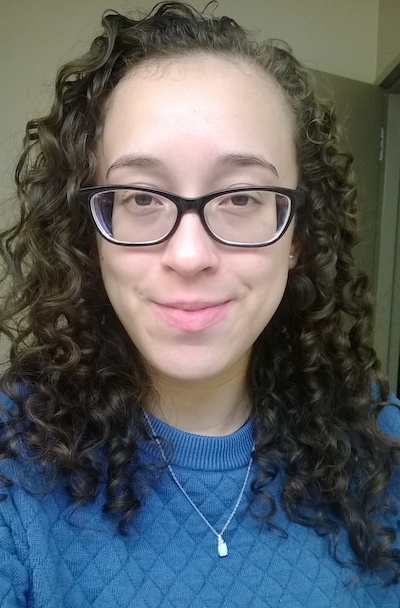

About Me
I got my start in coding in 2014, in an intro to programming class (for non-majors). We spent the semester learning the baby version of python AKA jython, and it was a challenge. The challenge was the fun part, along with learning a new language and everything the computer was capable of doing with simple directions written in jython.
I took it upon myself to learn HTML and CSS via Codeacademy that winter break. Since then, I've learned from resources like w3schools and book I've bought. Enrolling in the Houston Coding Bootcamp Powered by UT Austin was the last step I needed to get a real grip on the material I've been learning on my own. It's been a great experience so far, and itching to start the next step in my new career as a web developer. Which route I'll take—back-end or front-end development—is yet to be decided.
My ideal work environment would be working as part of a team, building off of my team's knowledge and learning from them. Ideally, we'd be bouncing ideas off of each other, asking each other questions, and giving each other feedback. Projects would be a conversation.
While I'm not coding I'm binging shows on Netflix, Hulu, and the CW. I also spend a lot of time with my two dogs, Nala and Simba. In the future I plan to take a hip-hop class, and I want to master cooking, archery, and swimming as survival skills but also for fun.